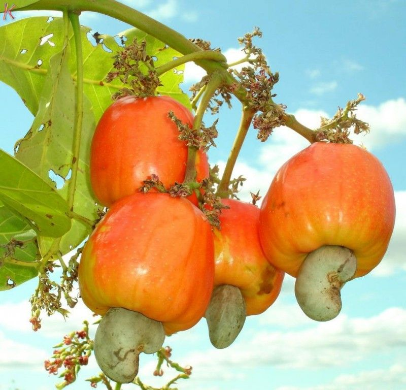
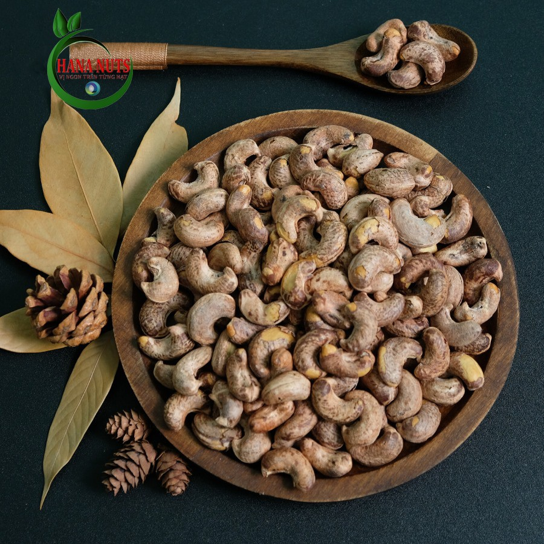
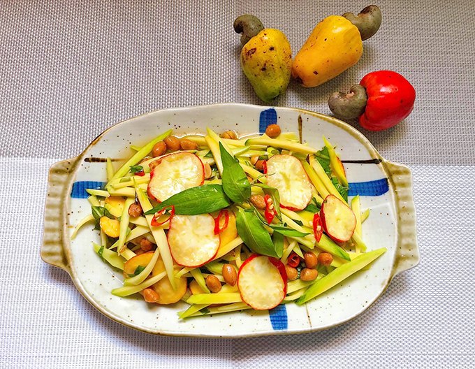
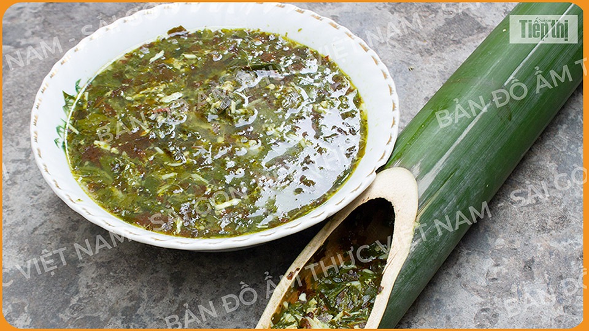
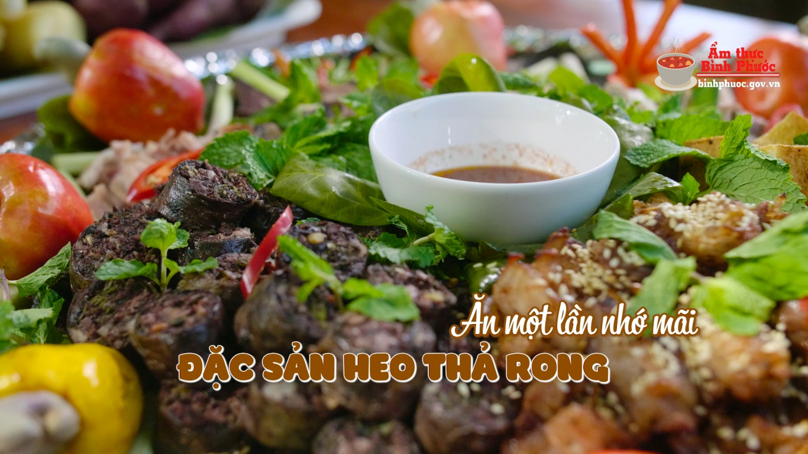
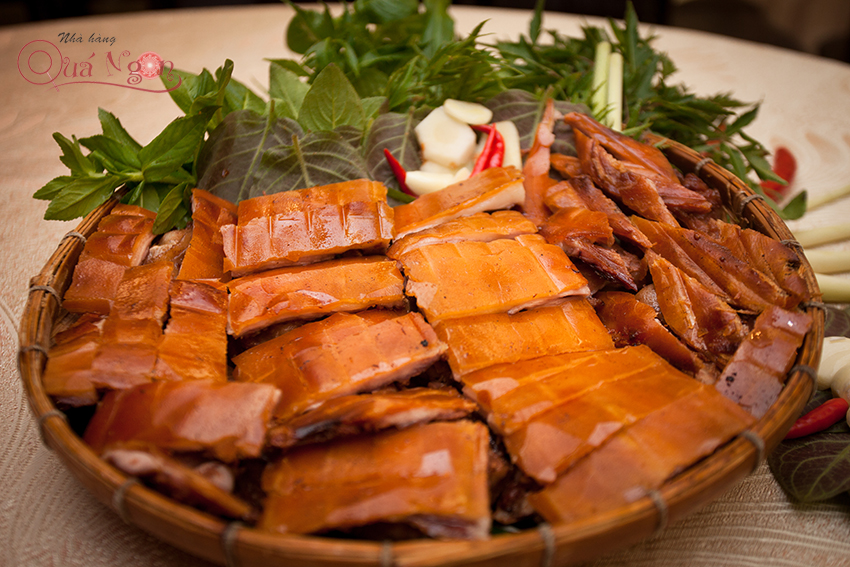
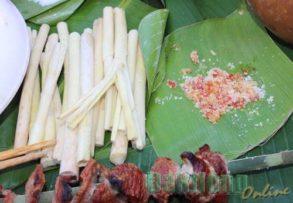

Bình Phước
Vẻ đẹp tiềm ẩn

Vẻ đẹp tiềm ẩn

Vẻ đẹp tiềm ẩn
Sau khi được người nông dân thu hái, hạt điều được tách lớp vỏ ngoài cứng chắc. Lớp nhân bên trong được sấy khô, cho ra sản phẩm "Hạt điều rang muối" thơm ngon trứ danh của tỉnh Bình Phước.
 Thông thường, trái điều sau khi thu hoạch sẽ bị bỏ lại. Người dân nơi đây đã sáng tạo thành một món ăn thơm ngon, bổ dưỡng và vô cùng lạ miệng.
Một món ăn vô cùng độc đáo của người dân S'tiêng. Nguyên liệu gồm lá nhíp, thịt heo, cá khô được bỏ vào ống tre nấu lên.
Lợn được người S'tiêng nuôi bằng cách chăn thả tự do. Do đó, thịt khi chế biến thường có vị ngọt, béo, thơm hơn nhiều.
 Các bạn đã từng ăn đọt mây? Nếu chưa hãy thử một lần trong đời. Đọt mây có vị đắng thanh lúc mới ăn. Tuy nhiên khi nuốt xuống thì lại có vị ngọt rất thanh. Đọt mây nướng nóng hổi mà chấm với muối ớt cay cay thì ngon hết sảy!
